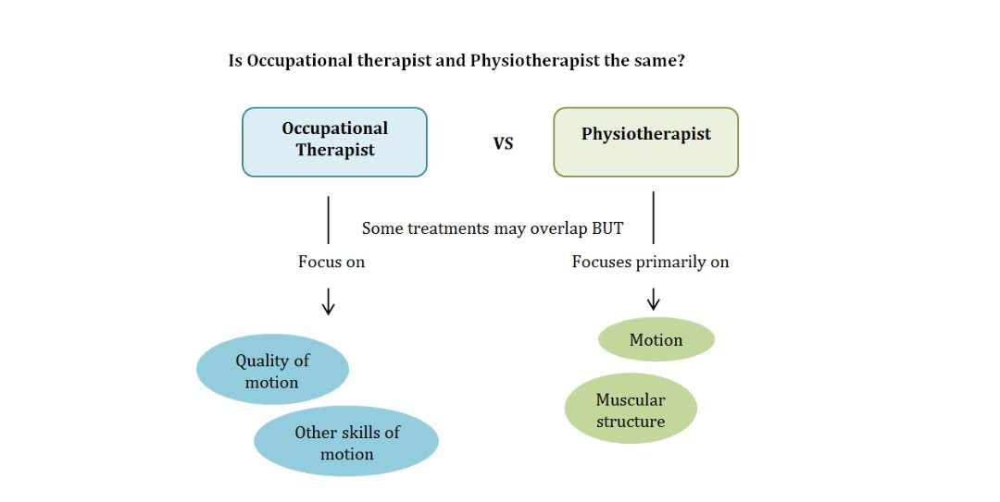
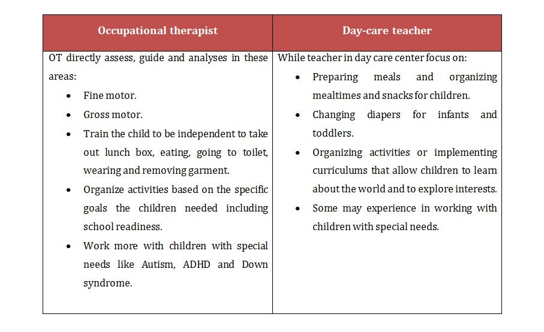
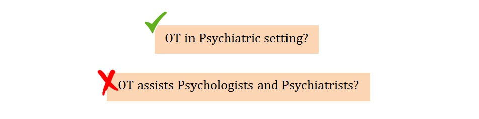
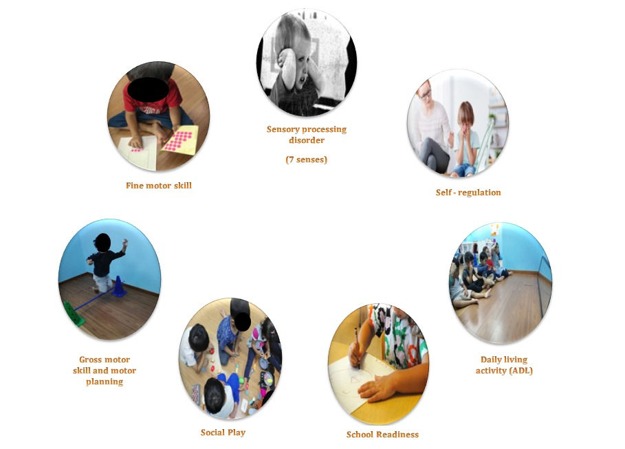

Occupational Therapy
WHO IS AN OCCUPATIONAL THERAPIST (OT)? 3 MISCONCEPTIONS
2020-04-16 · 2 min read

1. Occupational therapist versus Physiotherapist?
Physiotherapist helps client in more functional activity such as walking and running while occupational therapist helps client to walk again and perform daily activities such as toilet training, removing and wearing clothes and preparing them to return back to work or school after injuries, debilitating illnesses or when they are experiencing developmental delays.

2. Is Occupational therapy similar to day-care teacher?
Some of our duties might be similar but involve different aspects listed below. OTs will need a 4 year degree and/or diploma in Occupational Therapy with proper supervised clinical training at the hospitals and/or centers.

3. Does occupational therapists work with clients suffering from mental disabilities?
OT does provide treatments for people with mental disability. The activities may include:
- Encouraging independence in daily activities such as grooming, bathing and eating.
- Providing leisure activity to calm and explore activities that relaxes them.
At Urbane Ethos, our OTs only handle psychiatric cases on the basis of case by case only as we focuses more pediatric cases.
How does our OTs assist your child at Urbane Ethos?
We assist you in improving your child’s developmental delays and difficulties in all of the areas below so that you child can have a better quality of life with family and friends.

To help your child better, we adopt the following stages of care to assist and support our parents with a clear direction and clear therapy plans. Only with evidence-based, sound clinical practices and courageous support from parents, our kiddos would progress well.
Feel free to contact our occupational therapists for consultation and to make an appointment! Click
- https://forms.gle/KQLB8ToSpzNHF6fh6 for assistance OR
- Click the chat bubble on urbane ethos website.
- Call or WAs us at 013 249 0069
Help is within reach. We are here for you :-)